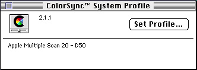

Legacy Document
Important: The information in this document is obsolete and should not be used for new development.
Important: The information in this document is obsolete and should not be used for new development.


About the ColorSync Manager
This section describes the ColorSync Manager architecture and how your application or device driver can use it for color conversion, color matching, color gamut checking, profile management, and creating CMMs that perform these services.The ColorSync Manager allows your application or driver to maintain consistent color across devices and across platforms. It can also let your users perform quick and inexpensive color proofing and see in advance which colors cannot be printed on their printers.
The ColorSync Manager consists of a collection of functions that your application or device driver can use to provide ColorSync support. These functions also allow you to create and manage profiles and to create CMMs that respond to requests from ColorSync-supportive applications or device drivers. The ColorSync Manager also includes a collection of display device profiles for Apple monitors and a robust default CMM.
Instead of providing your own device profile, device driver developers and peripheral manufacturers can obtain profiles from a number of vendors who provide them. For a list of profile vendors, contact the Developer Support organization of Apple Computer, Inc.
- ColorSync Manager shared library version number for PowerPC-based computers
- The ColorSync Manager is implemented as a shared library on PowerPC
\x89 -based computers. The ColorSync Manager shared library version number is 0x02100000.
Programming Interfaces
The ColorSync Manager programming interface allows your application to handle such tasks as color matching, color conversion, profile management, profile searching and accessing, reading individual tagged elements within a profile, embedding profiles in documents, modifying profiles, and creating CMMs that respond to requests for color matching and profile data transfer from one format to another.About the ColorSync Manager's Memory Allocation and Use
The ColorSync Manager attempts to allocate the memory it requires from the following sources in this order:
An application commonly sets the current heap zone to the application heap. When the ColorSync Manager is used apart from QuickDraw GX, this scenario commonly prevails, making application heap memory available to the ColorSync Manager.
- The current heap zone. If the current heap zone is set to the application heap, the ColorSync Manager will attempt to allocate the memory it requires from the application heap.
- The system heap. If the current heap zone is set to the system heap, the ColorSync Manager will try the system heap first and never attempt to allocate memory from the application heap.
- The Process Manager temporary heap. (If this final source does not satisfy the ColorSync's Manager's memory requirements, any attempt to load the ColorSync Manager will fail.)
However, QuickDraw GX holds a covenant with applications committing not to allocate memory from the application heap. QuickDraw GX sets the current heap zone to the system heap. Consequently, when the ColorSync Manager is used with QuickDraw GX, the ColorSync Manager is prohibited from allocating memory it requires from the application heap and must allocate all the memory it requires from the system heap and the Process Manager temporary heap.
Profiles
To perform color matching or color conversion across different base family color spaces requires the use of a profile for each device involved. Profiles describe various color characteristics. Profiles provide the ColorSync Manager with information necessary to convert color between device-dependent color spaces and device-independent color spaces. A profile may contain such information as lightest and darkest possible tones (referred to as white point and black point) and maximum densities for red, green, blue, cyan, magenta, and yellow. Together these measurements represent a color gamut.For the ColorSync Manager, a profile consists of color data that follows the International Color Consortium (ICC) profile format. The International Color Consortium defines several different types of profiles. Each of these types of profiles must include a different required set of information, but all of these profile types follow the same format.
This format provides a single cross-platform standard for translating color data across devices and across operating systems. A profile created for a particular device is usable on systems running different operating systems. The founding members of the ICC include Adobe Systems Inc.; Agfa-Gevaert N.V.; Apple Computer, Inc.; Eastman Kodak Company; FOGRA (Honorary); Microsoft Corporation; Silicon Graphics, Inc.; Sun Microsystems, Inc.; and Taligent, Inc. These companies have committed to full support of this specification in their operating systems, platforms, and applications.
To obtain a copy of the International Color Consortium Profile Format Specification, or to get other information about the ICC, visit the ICC's Web site at
http://www.color.org/A device profile characterizes a particular device: that is, it describes the characteristics of a color space for a physical device in a particular state. A display, for example, might have a single profile, whereas a printer might have a different profile for each paper type or ink type it uses. Use of different paper types and ink types constitutes different printer states. When your application uses the ColorSync Manager to match colors between devices such as a display and a printer, it specifies the profile for each device when calling a ColorSync Manager color-matching function.Device profiles are divided into three broad classifications:
A color space profile contains the data necessary to translate color values, such as CIE into RGB or RGB into CIE, as necessary for color matching. The ColorSync Manager, for example, uses color space profiles when mapping colors between different color spaces. Color space profiles provide a convenient means for CMMs to convert between different nondevice profiles.
- input devices such as scanners and digital cameras
- display devices such as monitors and flat-panel screens
- output devices such as printers and film recorders
Abstract profiles allow applications to perform special color effects independent of the devices on which the effects are rendered. For example, your application may choose to implement an abstract profile that increases yellow hue on all devices. Abstract profiles allow users of your application to make subjective color changes to images or graphics objects by transforming the color data within the profile connection space.
A device-linked profile combines multiple profiles, such as various device profiles associated with the creation and editing of an image. A device-linked profile can include profile types other than device profiles, such as abstract profiles and color space profiles. The first and last profiles in the set are commonly those of the source and destination devices.
Profiles can reside in stand-alone files in the ColorSync(TM) Profiles folder, which exists in the Preferences folder inside the System Folder. Hardware vendors should have their users install profiles for their peripheral devices in the ColorSync(TM) Profiles folder.
Profiles can also be embedded within images. For example, profiles can be embedded in PICT, EPS, and TIFF files and in the private file formats used by applications. Embedded profiles allow for the automatic interpretation of color information as the color image is transferred from one device to another.
Embedding a profile in an image guarantees that the image can be rendered correctly on a different system. However, profiles can be large--the largest can be several hundred KB or even larger. A profile identifier is an abbreviated data structure that uniquely identifies, and possibly modifies, a profile in memory or on disk, but takes up much less space than a large profile. For example, your application might embed a profile identifier to change just the rendering intent or flag values in an image without having to embed an entire new profile. For more information on embedding profile information, see "Embedding Profiles and Profile Identifiers" (page 4-32).
- Note
- The ICC profile format implemented in the ColorSync Manager is significantly different from the ColorSync 1.0 profile implementation. As implemented in the ColorSync Manager, a version 2.x profile is a tagged-element structure. The extension infrastructure design supports this change. The profile supports use of lookup table transforms. The ColorSync 1.0 profile is memory resident.
- IMPORTANT
- A document containing an embedded profile identifier is not necessarily portable to different systems or platforms.

Profile Properties
Profiles can have different kinds of information in them. Recall that different types of profiles, such as a profile for a scanner or a profile for a printer, have different sets of minimum required tags and their element data. However, all profiles have at least a header followed by a required element tag table. The required tags may represent lookup tables, for example. The required tags for various profile types are described in the International Color Consortium Profile Format Specification.Profiles contain additional information, such as a specification for how to apply matching. For more information, see "Color Management Modules" (page 3-23). Profiles may also have a series of optional and private tagged elements. These private tagged elements may contain custom information used by particular color management modules. It is important to note that private tags limit the cross-platform portability of a profile and that, for this reason, Apple Computer, Inc. discourages use of them. The ColorSync Manager uses profiles that follow the format defined by the International Color Consortium. See the International Color Consortium Profile Format Specification for more information.
Color Management Modules
A color management module (CMM) uses profiles to convert and match a color in a given color space on a given device to or from another color space or device, perhaps a device-independent color space.The ColorSync Manager includes color conversion functions that allow your application or driver to convert colors between color spaces belonging to the same base families without the use of CMMs; CMMs themselves can also call these color conversion functions. Color conversion and color matching across color spaces belonging to different base families always entail the use of a CMM.
When colors consistent with one device's gamut are displayed on a device with a different gamut, as in Figure 3-7, a CMM attempts to minimize the perceived differences in the displayed colors between the two devices. The CMM does this by mapping the out-of-gamut colors into the range of colors that can by produced by the destination device.
The CMM uses lookup tables and algorithms for color matching, previewing color reproduction capabilities of one device on another, and checking for colors that cannot be reproduced. Although the ColorSync Manager includes an Apple-supplied CMM, used as the default CMM, peripheral developers can create their own CMMs, tailored to the specific requirements of their device.
Each profile header includes a field that names the preferred CMM to use for performing color matching involving that profile. If two profiles in a color-matching session name different CMMs, the ColorSync Manager follows an algorithm, described in "When Color Matching Occurs" (page 3-25), to determine the CMM to use.
The structure used to create a device-linked profile, which can contain many profiles, includes a field that identifies the CMM to use for the entire color-matching session across all profiles.
Rendering Intents
Rendering intent refers to the approach taken when a CMM maps or translates the colors of an image to the color gamut of a destination device. The ICC version 2.x profile specification defines a tag for each of the four supported rendering intents. The following four rendering intents supported by the ColorSync Manager allow the user to select an approach that best maintains the important aspects of the image:
- Perceptual matching. In this approach, all the colors of a given gamut are scaled to fit within another gamut. The colors maintain their relative positions, so the relationship between colors is maintained. With realistic images such as scanned photographs, perceptual matching produces better results than colorimetric matching in most cases; in Figure 3-7, for example, the eye could compensate for the difference between the two gamuts, and a perceptually matched image on the printer device would look very similar to the original image on the RGB device. A disadvantage of perceptual matching is that all of the original colors are changed in the copy.
- Relative colorimetric matching. In this approach, colors that fall within the gamuts of both devices are left unchanged. For example, to match an image from the RGB gamut onto the printer gamut in Figure 3-7, only the colors in the RGB gamut that fall outside the printer gamut are altered. Relative colorimetric matching allows some colors in both images to be exactly the same, which is useful when colors must match quantitatively. A disadvantage of relative colorimetric matching is that many colors may map to a single color, resulting in tone compression. All colors outside the printer gamut in Figure 3-7, for example, would be converted to colors at the edge of its gamut, reducing the total number of colors in the image and possibly greatly altering its appearance. In relative colorimetric matching, colors outside the gamut are usually converted to colors with the same lightness, but different saturation, at the edge of the gamut. The final image may be lighter or darker overall than the original image, but the blank areas will coincide.
- Saturation matching. In some computer graphics, such as bar graphs and pie charts, the actual color displayed is less important than its vividness. In this approach, the relative saturation of colors is maintained from gamut to gamut. Colors outside the gamut are usually converted to colors with the same saturation, but different lightness, at the edge of the gamut.
- Absolute colorimetric matching. This approach is based on a device-independent color space in which the result is an idealized print viewed on a perfect paper having a large dynamic range and color gamut. In reality paper cannot reproduce densities less than a particular minimum density (Dmin). Absolute colorimetric matching leads to a close appearance match over most of the tonal range, but if the minimum density of the idealized image is different from that of the output image, the areas of the image that are left blank will be different. Colors that fall within the gamuts of both devices are left unchanged. Colors with densities that fall outside the dynamic density range of the destination device are clipped. While an appearance match may be achieved, there will be a loss of detail in some regions.
When Color Matching Occurs
When a ColorSync-supportive scanning application creates a scanned image, it embeds a profile for the scanner driver in the image. The profile that is associated with the image and describes the characteristics of the device on which the image was created is called the source profile. If the colors in the image are subsequently converted to another color space by the scanning application or by another ColorSync-supportive application, the ColorSync Manager uses that source profile to identify the original colors and to match them to colors expressed in the new color space.To display the image requires using another profile, which is associated with the output device, such as a display. The profile for that device is called the destination profile. If the image is destined for a display, the ColorSync Manager uses the display's profile (the destination profile) along with the image's source profile to match the image's colors to the display's gamut. If the image is printed, the ColorSync Manager uses the printer's profile to match the image's colors to the printer, including generating black and removing undercolors where appropriate.
If the color gamut of the source profile is different from the color gamut of the destination profile, the ColorSync Manager relies on the CMM and the information stored in both profiles for mapping the colors from the source profile's gamut to the destination profile's gamut. The CMM contains the necessary algorithms and lookup tables to enable consistent color among devices.
When using the ColorSync Manager functions for color matching, you specify the source and destination profiles. If you do not specify the source profile or the destination profile, the ColorSync Manager substitutes the system profile. Recall that the system profile is the profile for the system's display device and that the user can select the profile to use. Figure 3-8 shows the ColorSync System Profile control panel, which allows the user to configure the system profile to match the display device. In this case, the user has selected the profile for the Apple 20 inch, multiple scan monitor to serve as the system profile.
Figure 3-8 The ColorSync System Profile control panel
 If the user does not specify a system profile through the ColorSync System Profile control panel, the ColorSync Manager uses the default system profile. The default system profile is the device profile for the Apple 13-inch color display.
Color matching between the source and destination color spaces happens inside the color management module component. Figure 3-9 shows the relationship between your application, the ColorSync Manager, the Component Manager, and the CMM component.
Subtopics
- Programming Interfaces
- About the ColorSync Manager's Memory Allocation and Use
- Profiles
- Profile Properties
- Color Management Modules
- Rendering Intents
- When Color Matching Occurs
- QuickDraw GX and the ColorSync Manager
- What Users Can Do With ColorSync-Supportive Applications